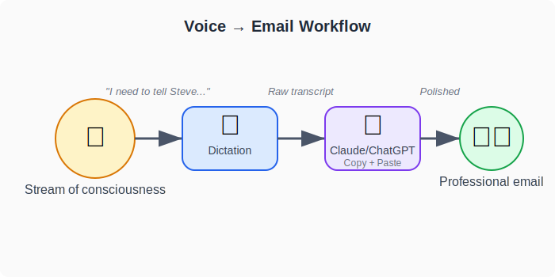
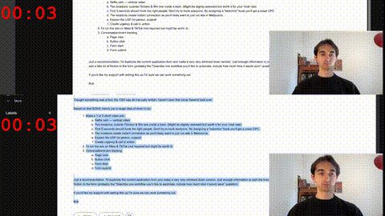
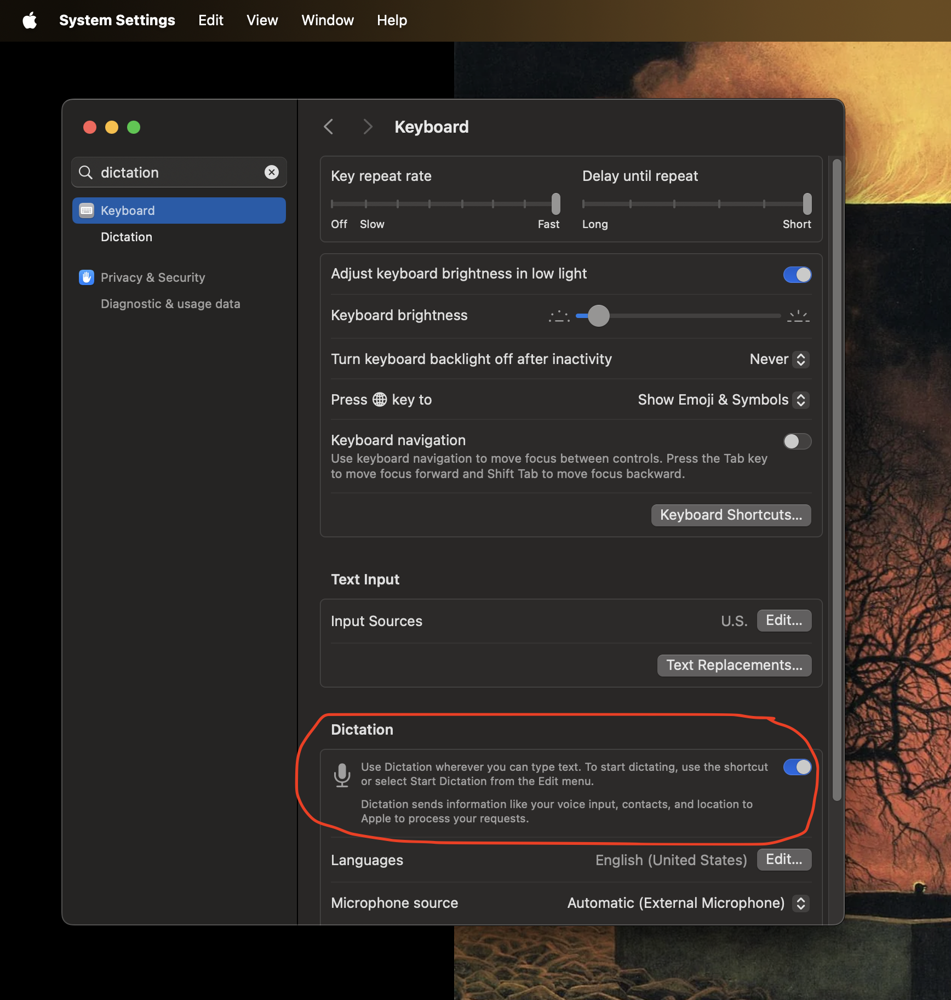

You Can Probably Write Emails Twice as Fast using Dictation and LLMs
Until recently I never used AI for writing emails. Each time I tried, I found it to be more trouble than it was worth. Just this weekend though, I discovered a free (well nearly free) pipeline that anyone can set up using generic tools that seems to cut down the time to write emails by 50%
The basic idea is that you dictate, stream-of-consciusness style directly into your favorite LLM, it cleans it up into a polished email, that you can then touch up and send.
To start with I noticed that this was just very fun, but then I did some benchmarking with a 100-word email, and the dictated version was nearly twice as fast.
The fully typed email took nearly 6 minutes, and the dictated version only a little over 3, and my typing speed (sans errors) is around 80-90 words per minute, which is considered pretty quick. The speed isn't even the main benefit though. Typing while avoiding errors and also trying to think of nice phrases is quite mentally taxing, it's much more pleasant to form your ideas out loud, just as if you were speaking to a human scribe.
Most professionals send about 40 emails per week, taking 5 minutes each [1][2]. That's over 3 hours of typing, so trying this out could save you 1.5 hours weekly.
My Setup
I have created a 3-minute walkthrough on how to set this up on a macbook here
But below are the instructions in text:
- Enable dictation on your computer
Macbook
- on a macbook: settings → search dictation → keyboard → toggle dictation on 
- now when you press "control" twice on any text field it will enter your speech directly into that field. I enter it directly into the LLM chat interface.
Windows
- Press Windows key + H to open voice typing
- Click the microphone button or press Alt + ` (backtick) to start dictating
- Your speech will be converted to text in any text field
- Think out loud about what you want the email to say – don't worry about pausing, uhms, ahs, mistakes, digressions or backtracking, it's all fine. Just be sure to end with: "dash dash dash dash turn this text into a professional email"
- Paste your words into Claude, ChatGPT or your preferred model
- Review what the AI wrote
- Copy it to your email client, make any final tweaks
- Send
Things to Consider
The main issue: you'll be talking out loud, which can disturb others in an open office, so maybe keep this for work from home days.
Also, it's most useful for emails longer than 50-75 words. Anything shorter than this seems to be faster to just type directly.
Give It a Try
Next time you need to write a longer email, try this method. Setup takes 3 minutes, and if it works this could make your work day noticeably more enjoyable.
References
[1] Karat, C.M., Halverson, C., Horn, D., Karat, J. (1999). "Patterns of entry and correction in large vocabulary continuous speech recognition systems". Proceedings of the SIGCHI conference on Human Factors in Computing Systems (CHI '99). New York, NY, US: ACM. pp. 568–575. doi:10.1145/302979.303160
[2] Slack. "How to save employees time". Slack Blog. https://slack.com/intl/en-au/blog/productivity/save-employees-time
[3] Ruan, S., Wobbrock, J.O., Liou, K., Ng, A., Landay, J. (2016). "Speech Is 3x Faster than Typing for English and Mandarin Text Entry on Mobile Devices". arXiv preprint. doi:10.1145/302979.303160
[4] Medimorec, S., Risko, E.F. (2023). "Comparing the cognitive demands of writing by hand versus typing". Frontiers in Psychology, 14. https://www.frontiersin.org/journals/psychology/articles/10.3389/fpsyg.2023.1108898/full
If you thought this was interesting and want to learn more things like this, check out the course